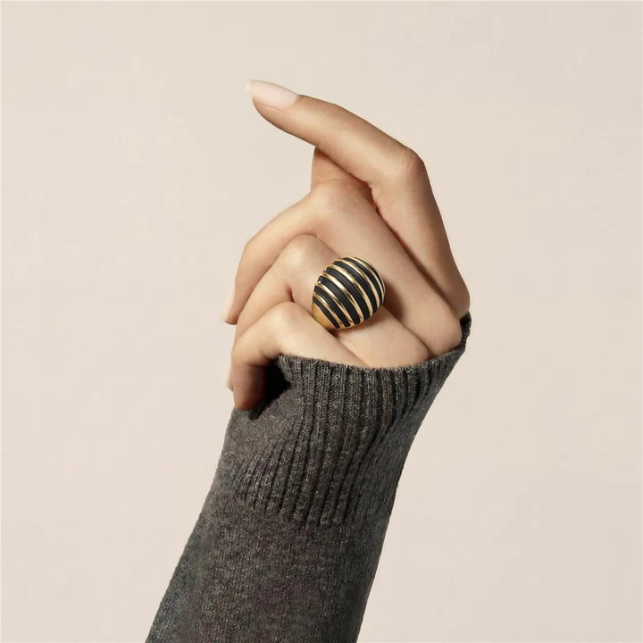
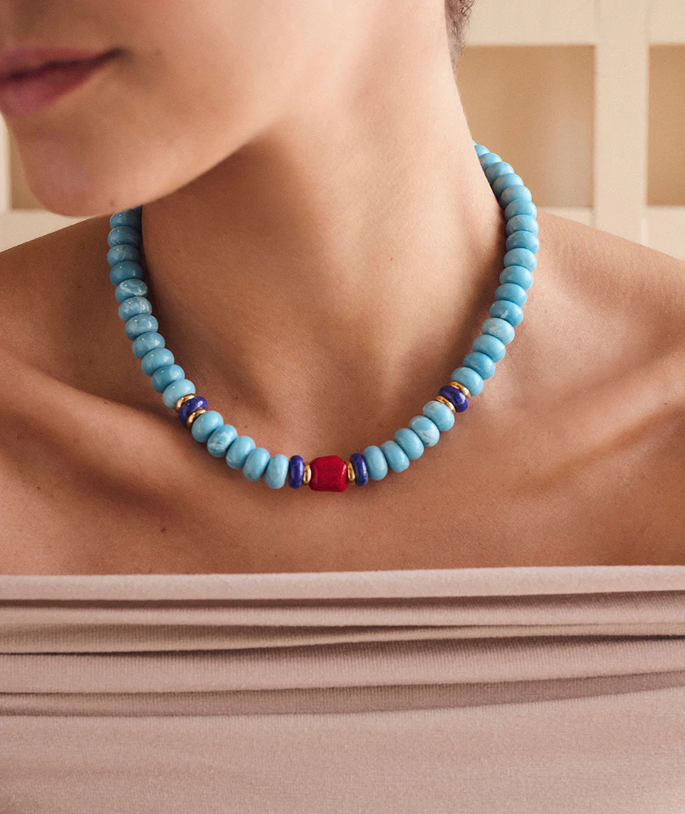

★★★★★
"Trato impecable y joyas preciosas. Me ajustaron la talla en el día."
— Laura G.
Joyería, relojería y taller propio en Alcalá de Henares. Especialistas en diseño a medida, alianzas y asesoramiento personalizado con más de 30 años de tradición familiar.
DESCUBRE LA COLECCIÓN



En Martínez Joyeros sabemos que tu estilo es tu mejor carta de presentación. Desde nuestra boutique en el corazón de Alcalá de Henares, seleccionamos cuidadosamente las tendencias de cada temporada, protagonizadas por las colecciones oficiales de firmas como Luxenter y Vidal & Vidal.
Nuestra apuesta es clara: diseños de precisión, ligeros y totalmente respetuosos con tu piel. Descubre collares de doble altura, pulseras de eslabones perfectas para combinar entre sí y aros de gran volumen. Piezas con acabados impecables en tonos dorados y plateados inalterables, pensadas para elevar tu look y acompañarte con comodidad en tu día a día.
Más de treinta años en el corazón de Alcalá de Henares. Una joyería familiar donde cada pieza tiene una historia y cada cliente, un nombre.
Más de 30 años en el corazón de Alcalá de Henares transformando la pasión por la alta joyería y la relojería en un arte al alcance de todos.
La historia de Martínez Joyeros comienza con Manuel Martínez, joyero de profesión dedicado toda su vida a su gran pasión: la creación y admiración por las piezas únicas. Su oficio, marcado por el detalle y el amor por la orfebrería, sentó las bases de una tradición familiar que hoy continúan sus hijas, Ana y Esther Martínez.
Con una visión renovada y el mismo espíritu artesanal de su padre, Ana y Esther mantienen vivo su legado en nuestra tienda de la Calle Marqués de Alonso Martínez. Combinamos el diseño contemporáneo en piezas de alta orfebrería con una atención personalizada que nos define como referentes para quienes buscan anillos de boda y alianzas de compromiso en Alcalá.
Nuestra vitrina ofrece un equilibrio perfecto entre la tradición y las últimas tendencias. Trabajamos con orfebres españoles de prestigio y somos distribuidores oficiales de firmas líderes en bisutería de diseño y relojería moderna como Vidal & Vidal, Viceroy, Mark Maddox, Fidda y Sobrani.
📍 Visítanos en el Centro de Alcalá (Junto a Vía Complutense)Lo que dicen nuestros clientes en Google. Ver todas en Google Maps
"Trato impecable y joyas preciosas. Me ajustaron la talla en el día."
"Compré un colgante precioso. Calidad y precio excelentes. ¡Repetiré!"
"Profesionales y muy cercanos. Me ayudaron a elegir un regalo perfecto."
"Tienen joyas preciosas y un trato de confianza. Muy recomendables."
"Llevé a reparar un collar familiar y el resultado del taller fue espectacular. Profesionales de los de antes."
"El mejor sitio para comprar un regalo de última hora. Tienen mucha variedad de bisutería moderna y relojes."
"Trato impecable y joyas preciosas. Me ajustaron la talla en el día."
"Compré un colgante precioso. Calidad y precio excelentes. ¡Repetiré!"
"Profesionales y muy cercanos. Me ayudaron a elegir un regalo perfecto."
"Tienen joyas preciosas y un trato de confianza. Muy recomendables."
"Llevé a reparar un collar familiar y el resultado del taller fue espectacular. Profesionales de los de antes."
"El mejor sitio para comprar un regalo de última hora. Tienen mucha variedad de bisutería moderna y relojes."
Estamos ubicados en la Calle Marqués de Alonso Martínez, 5, en pleno centro comercial y casco histórico de Alcalá de Henares, muy cerca de la Vía Complutense y la Plaza de Cervantes.
Somos distribuidores oficiales en Alcalá de firmas de tendencia como Vidal & Vidal, Viceroy y Mark Maddox. También contamos con colecciones exclusivas de Fidda y Sobrani.
Sí, disponemos de servicio de taller artesanal donde realizamos arreglos, limpiezas y ajustes de talla con aleaciones biocompatibles. También realizamos mantenimiento de relojería y cambio de pilas con la profesionalidad de nuestros 30 años de experiencia.
En Martínez Joyeros somos expertos en anillos de compromiso y alianzas de boda. Ofrecemos asesoramiento para crear piezas a medida y diseños personalizados que se adapten a tu estilo y presupuesto.
Para tu comodidad, aceptamos efectivo y todas las tarjetas de crédito/débito, ofreciendo atención personalizada para todas tus compras en tienda.
Ven a conocernos en el corazón de Alcalá de Henares. Te asesoraremos para encontrar la pieza perfecta.
L–V · 10:00–14:00 y 17:00–20:00 · Sáb · 10:00–14:00